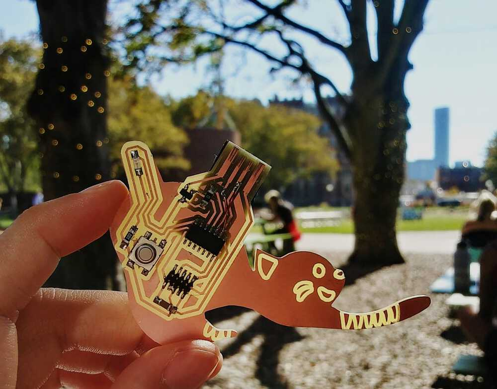

Oct 6, 2021
Assignments
1. Hello world board
I made the SAMD11C echo 10 pin board.
In KiCad’s Schematic Layout Editor, I first laid out the components from here (see D11C-echo-10 pin), adding an LED (with a 1kΩ current limiting resistor) and button.
Then, in the PCB Layout Editor, I wired up the components. I made a mistake wiring D+ and D- (left image), which is reflected in my milled design. The corrected layout is shown in the right image, with an additional 0Ω bridge resistor. IRL I fixed my PCB with some jumper wires.
3D view from KiCad:
I exported the layout as an SVG and used the pen tool to draw a stretching KiTTYCad around it.
The design is inspired by the Singapura cat, which are known for their blunt, stubby tails. My design has the LED in the tail of the cat :3
I milled the board on the Roland SRM-20, following these steps, except I chose the svg program. Weirdly, mods made the svg was slightly smaller than the actual svg file the first time round, so I had to redo the board at 71.98 units.
The board was a little curved in the milling machine, resulting in the 1/64" bit going in to the board deeper than expected. It was still okay in this instance since it did not make any traces too thin or peel away. I verified that the traces were as intended using a multimeter in continuity mode.
I soldered on the components, using Kapton tape to mask the board along the way. I also layered a credit card thickness of vinyl under the USB end of the board.
Sadly, my board did not work at first go, and Anthony expertly diagnosed that the regulator was not working as expected to convert 5V to 3.3V. There could have been a problem with the component, or perhaps a different regulator got mixed into the drawer.
After fixing the issues, my board worked and I managed to upload some code (see steps below) to make the LED blink. Yay!
It’s a good day to be a kitty cad.

Programming steps
- Program SAMD11C14A chip with bootloader using the binary file so that it can run code from Arduino. Use the edbg utility to load the binary onto the board.
edbg -bpv -e -t samd11 -f sam_ba_Generic_D11C14A_SAMD11C14A.bin - Find and add the json link from mattairtech to Arduino’s preferences so that it can use
Generic_D11C14Aas a board. Make sure the board and port are correctly set up in Arduino (under Tools). - Now we can upload and use Arduino code for a blinky LED! Thanks to Anthony and Ben for troubleshooting the pin number:
void setup() {
pinMode(4, OUTPUT);
SerialUSB.begin(115200);
}
void loop() {
digitalWrite(4,HIGH);
delay(100);
digitalWrite(4,LOW);
delay(100);
}
2. PCB observations
Matt and I used to oscilloscope to observe the signal in the LED, which in my code has a frequency of 5Hz and potential difference of ~3V.
We also attempted to observe the usb 2.0 handshake across the D+ and D- pins and ground.